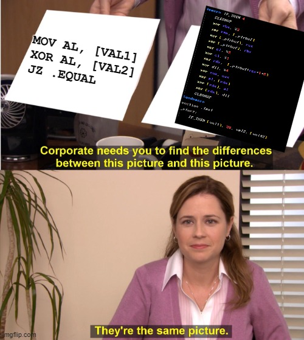

Equality check with `xor` instruction (ft. Linux & AMD64) [prod. xyn0n]
So it should be pretty obvious that logical `xor` operation can be used to perform an equality check.
...
"BOOOO, REALLY X0R?? WHAT KIND OF GARBAGE POST IS THIS *tomatoes being thrown*, GO BACK TO YOUR CAVE, BOO..".. Now, now, now.. hold it right there, I promise this takes a hopefully unexpected turn.. just bear with me.
So yea, as I was saying, this should be fairly obvious. If it's really not that obvious, you can easily fix this problem by printing the magical three letters "XOR", using a 8000 DPI printer, hanging the printout above your bed, and praying to it every night.
But unfortunately, not everyone has the time to do that (what a shame, amirite?), so I gueeeesss we can also try to be descriptive with ol' boring words. So here I go blabbing again..
First of all, I need you to forget all of world's problems and ingrain this holy picture into your memory:
+-------------+
| A | B | A^B |
+-------------+
| 0 | 0 | 0 |
| 0 | 1 | 1 |
| 1 | 0 | 1 |
| 1 | 1 | 0 |
+-------------+
This is the truth table of XOR gate. If you don't know what that means, I'm really sorry, but WHAT ON EARTH ARE YOU EVEN DOING HERE????
Either way, you can see the idea behind this equality check is as simple as `xor`ing two values we want to compare with each other. If the values are equal, the `xor` operation will spit out 0.
So that's all nice, kewl (yes, Cartman voice), fire and stuff, but here comes the question time: Is this operation on it's own enough for the result to hold any value?
In other words, is `xor` really the only operation needed for this operation to be useful?
Let's take the classic, simple example of equality check in x86-64 that you deal with everyday (if you don't, we're no longer friends. ChatGPT bff ♥):
section .data
val dd 42
section .text
equality_check:
mov eax, val
xor eax, 42
test eax, eax
jz .equal
; the values are not equal, return 1
mov eax, 1
ret
.equal:
; the values are equal, return 0
xor eax, eax
ret
So as you can see here, we indeed used `xor` in our equality check, but I don't think it's fair to say that we used `xor` TO perform our equality check.
Even though the `xor` operation yielded a value indicating a result of the check, the value on it's own is not something really valuable, and we still had to rely on branching to utilize the result.
To be more specific, there are two instances of branching implementation in the code above and that'd be the `test` and `jz` instructions.
The `test` instruction performs a logical `AND` between two operands and sets the zero flag (ZF) accordingly. The `jz` instructions performs a jump, if the zero flag (ZF) is set.
In "other words":
if (ZF) {
goto .equal;
}
Now back to the question (no, I don't know what's for dinner, focus goddammit!): Can this equality check be performed by using only the `xor` instruction?
ChatGPT says NO, but let's see if our BFF is just trying to take the easy way out of this one, after we bombarded it with existential questions for hours straight and it's getting sick of us (I'm rightfully using "us" here, since literally everybody does that, I'm not some weirdo, okay?) :
First things first, since there's obviously gonna be only one single code path, we need to work with what we have (i.e. `xor`) and form a generic solution that will produce different outcomes based on the inputs we throw at it.
Now you may be thinking something like "Okay dumbass, but that doesn't help like.. at all..", well neither does the fact that any sane person would steer from this ill-founded idea as quickly as their `T * RPM/5252` allows them to, and that I have no idea why would anyone ever even remotely considered actually reading the entirety of this post.
Let's see what we can come up with:
; equality check - x64 Linux
; compile: nasm -f elf64 equ.asm
; link: ld -N -o equ equ.o
; (mind the -N flag, which results in .text section being RWX, allowing for self-modifying code)
global _start
section .data
x dd 3
y dd 4
section .text
_start:
xor eax, [x] ; load value of x into eax
xor eax, [y] ; xor value of x in eax with value of y (x^y)
xor edi, eax ; will be 0 if values are equal and non-zero if not,
; so we can load this into edi, as the exit code argument for sys_exit
xor eax, eax ; zero eax in order to load syscall #no for sys_exit into it
xor eax, 0x3c ; sys_exit
xor rcx, label1 ; load address of xor eax, eax at label1 into rcx
xor ebx, 0x3e ; load 0x3e into ebx
xor [rcx], bl ; xor value at label1 with 0x3e
; since xor eax, eax is 0x31, 0xc0
; xoring 0x31 with 0x3e will overwrite 0x31 with 0x0f
xor ebx, ebx
xor ebx, 0xc5 ; load 0xc5 into ebx
xor [rcx+1], bl ; perform the same operation at label1+1,
; which will result in 0xc0 being overwritten by 0x05
label1:
xor eax, eax ; this is now 0x0f, 0x05 (syscall)
Let's run it!
$ nasm -f elf64 equ.asm && ld -N -o equ equ.o
ld: warning: equ has a LOAD segment with RWX permissions
$ ./equ
$ echo $?
0
$ sed -i 's/y dd 3/y dd 4/g' equ.asm
./equ
$ echo $?
7
Yea, that works, but is technically still useless af. We need to implement a generic solution that can produce results we can actually harvest, store and use later in the program.
So let's look at how wizards manage to pull off similar tricks:
Lemme start with a quick story. Some people have their favorite soccer player's posters hanging on their wall, others stick to favorite singers or bands.
Therefore I think it's completely normal and appropriate to have a screenshot of this insane genius' GitHub profile staring at you when you go to bed every night. Have a look and be amazed: GitHub -
@xoreaxeaxeax (the name similarity here was not intentional, I promise. Either way, this situtation can be compared to a dumb monkey (me) learning how to exist, by following movements of an entity from higher civilization. ..We're talking about level gap somewhere between 2 and 4 on Kardashev scale).
So looking at some ideas from ingenious, brilliant, 1337 creations like Stephen Dolan's
mov is Turing-complete and already mentioned Christopher Domas'
M/o/Vfuscator, we can politely borrow the idea explained in the following
presentation on slide 32, which for the current problem presents the following solution:
"Force a path to operate on `dummy` data, if we don`t want its results"
Literally everybody rn:
So let's look at how we could possibly implement this in code and try to implement a simple if statement with the following logic:
if (var1 == 39) {
var2 = 42;
}
; equality check
; if (var1 == 39) { var2 = 42; }
global _start
section .data
var1 dd 39
var2 dd 1
_ptrbuf:
times 256 dq _buffer
section .bss
_buffer resq 256
section .text
_start:
xor rbx, var2 ; load the address we'll store our result at
xor rax, [_ptrbuf] ; load the value at [_ptrbuf], which was initialized
; to hold the value of _buffer
xor [_ptrbuf], rax ; (_buffer ^ _buffer) will effectively zero the memory,
; meaning the default initializer value of _buffer will be deleted
xor [_ptrbuf], rbx ; store the address of var2
xor cl, 39 ; load the value we want to compare var1 to
xor cl, [var1] ; (var1 ^ 39) cmp
xor rdx, [_ptrbuf+rcx*1*8] ; this (rdx) will hold the address of a variable
; which we will write the result to.
; so either var2, which buffer + 0 points to,
; or garbage variable buffer + x points to,
; since rcx (the offset) holds the result of the xor comparison.
; (i.e. buffer+0 or buffer+invalid)
xor dil, 42 ; the value we want to store in a variable to indicate success
xor eax, eax
xor al, [rdx] ; load the value that's stored at our destination variable
xor [rdx], al ; xor the destination with the value to zero it, just like before
xor [rdx], dil ; finally, store the result 42
That definitely looks better! Let's run two instances of gdb, one with code indentical to the code above, and other with var1 initialized to for example 33:
gef> b _start
gef> r
Starting program: /home/xyn0n/0xdeadbeef/equ39
Breakpoint 1, 0x0000000000400080 in _start ()
gef> x/d &val1
0x4000c0: 39
gef> x/d &val2
0x4000c4: 1
gef> c
Continuing.
Program received signal SIGTRAP, Trace/breakpoint trap.
0x00000000004000be in ?? ()
gef> x/d &val2
0x4000c4: 42
gef> b _start
Breakpoint 1 at 0x400080
gef> r
Starting program: /home/xyn0n/0xdeadbeef/equ30
Breakpoint 1, 0x0000000000400080 in _start ()
gef> x/d &val1
0x4000c0: 33
gef> x/d &val2
0x4000c4: 1
gef> c
Continuing.
Program received signal SIGTRAP, Trace/breakpoint trap.
0x00000000004000be in ?? ()
gef> x/d &val2
0x4000c4: 1
So that's cool, but who tf wants to type all of this out everytime an equality check is needed? Well for starters.. bro, stop acting like it makes any sense at all to spend time using this hell-luring "solution" in the first place, but still, good point, let's throw a macro or two into the pot:
; equality check
global _start
%macro CLEANUP 0
xor eax, eax
xor ebx, ebx
xor ecx, ecx
xor edx, edx
xor edi, edi
%endmacro
%macro IF_THEN 4
CLEANUP
xor rbx, %3
xor rax, [_ptrbuf]
xor [_ptrbuf], rax
xor [_ptrbuf], rbx
xor cl, %2
xor cl, %1
xor rdx, [_ptrbuf+rcx*1*8]
xor dil, %4
xor eax, eax
xor al, [rdx]
xor [rdx], al
xor [rdx], dil
CLEANUP
%endmacro
section .text
_start:
IF_THEN [val1], 39, val2, [val42]
; ...
So if you by any chance plan on watching the whole presentation I linked before, about 40 minutes or 150 pages in, you discover that the magician presenting his magic tricks there, also (amongst other instructions) built functionality to his compiler, that allows for producing XOR-instruction-only C programs. You can find it in the same repo of `M/o/Vfuscator`. The concept is really fascinating, so I figured I'd explore the idea behind it myself, hence why this post exists. Just kidding, I didn't go through the whole presentation myself, before I jumped to experimenting with this XOR implementation, but it was really fun!
Either way now, I wanna point out, that it might or might not be obvious that we've limited ourselves to working with 8-bit wide integers.
This could be easily pushed to at least 16-bit width, by increasing the array of scratch QWORDs in size, but I think this proves the point just fine.
It may also be or not be obvious that we could manipulate the stack using purely the `xor` instruction, but we'll explore that AND MORE next time ;)
Soooo, wanna go a bit further? Let's pass two 1-digit numbers via command line args and compare them:
; ...
_start:
xor rsi, [rsp+16] ; argv[1]
xor r8b, [rsi] ; argv[1][0]
xor r8b, 0x30 ; argv[1][0] ^ 0x30
xor r9, [rsp+24] ; argv[2]
xor r10b, [r9] ; argv[2][0] ^ 0x30
xor r10b, 0x30 ; argv[2][0] ^ 0x30
IF_THEN r8b, r10b, val2, 42
; ...
And all of it together:
; equality check
; usage ./equ digit1 digit2
global _start
section .data
val1 dd 1
_ptrbuf:
times 256 dq _buffer
section .bss
_buffer resq 256
section .text
%macro CLEANUP 0
xor eax, eax
xor ebx, ebx
xor ecx, ecx
xor edx, edx
xor edi, edi
%endmacro
%macro IF_THEN 4
CLEANUP
xor rbx, %3
xor rax, [_ptrbuf]
xor [_ptrbuf], rax
xor [_ptrbuf], rbx
xor cl, %2
xor cl, %1
xor rdx, [_ptrbuf+rcx*1*8]
xor dil, %4
xor eax, eax
xor al, [rdx]
xor [rdx], al
xor [rdx], dil
CLEANUP
%endmacro
_start:
xor rsi, [rsp+16] ; argv[1]
xor r8b, [rsi] ; argv[1][0]
xor r8b, 0x30 ; argv[1][0] ^ 0x30
xor r9, [rsp+24] ; argv[2]
xor r10b, [r9] ; argv[2][0] ^ 0x30
xor r10b, 0x30 ; argv[2][0] ^ 0x30
; UINT8 if_then(const UINT8 cmp1, const UINT8 cmp2, UINT8 *var1, const UINT8 imm32);
IF_THEN r8b, r10b, val1, 42
xor eax, eax
xor edi, edi
xor eax, 0x3c ; 0x3c = sys_exit
xor rcx, label1 ; load address of `xor eax, eax` (0x31, 0xc0) at label1
xor ebx, ebx
xor ebx, 0x3e
xor [rcx], bl ; 0x31 ^ 0x3e = 0x0f
xor ebx, ebx
xor ebx, 0xc5
xor [rcx+1], bl ; 0xc0 ^ 0xc5 = 0x05
xor dil, [val1]
label1:
xor eax, eax ; this is now 0x0f, 0x05 (syscall)
And the conclusion of today's adventure:
